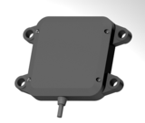
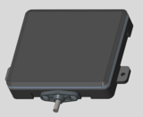
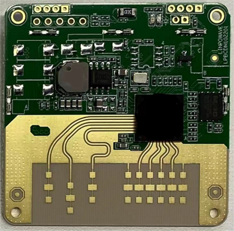
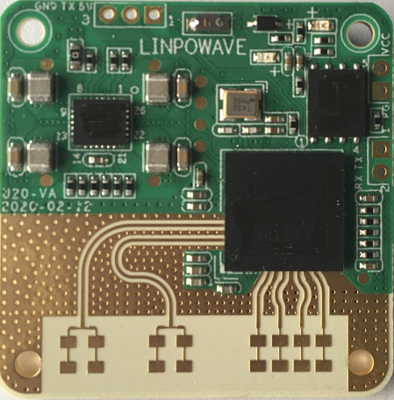
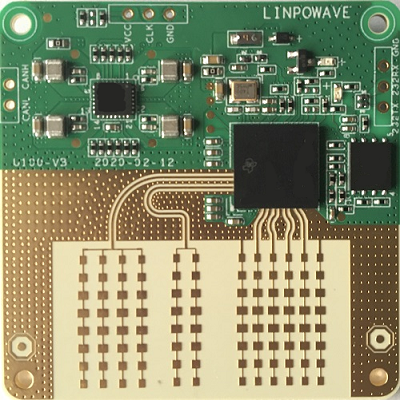
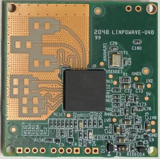
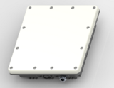
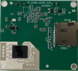

| 型號 |  VJ80 |
VJ40 |
 VF200 |
VF160 |
 U80 |
 U20 |
 U100 |
 R20 |
 I500 |
I260 |
 H10 |
| 尺寸 | 91*66*15mm | 91*66*15mm | 95.6*77.2*21.6mm | 95.6*77.2*21.6mm | 50*50mm | 35*35mm | 50*50mm | 40*40mm | 204*187*49mm | 204*187*49mm | 50*50mm |
| 重量 | ≤120g | ≤200g | ≤200g | ≤200g | ≤70g | ≤30g | ≤50g | ≤30g | ≤1000g | ≤1000g | ≤50g |
| 量測範圍 | 1~80m | 1~40m | 1~200m | 1~160m | 1~100m | 1~20m | 1~100m | 1~20m | 0.5~500m | 0.5~260m | 0.3~10m |
| 用途 | 汽車角雷達 | 汽車角雷達 | 汽車前向避障雷達 | 汽車前向避障雷達 | 無人機避障與防地飛行 | 無人機避障與防地飛行 | 無人機避障與防地飛行 | 機器人避障雷達 | 智慧交通雷達 | 智慧交通雷達 | 室內人員檢測雷達 |
| 供電 | DC12V（350mA） | DC12V（300mA） | DC12V（500mA） | DC12V（400mA） | DC12V（300mA）/DC5V（500mA） | DC5V（500mA） | DC12V（300mA）/DC5V（500mA） | DC5V（400mA） | DC12V（1000mA） | DC12V（1000mA） | DC5V（500mA） |
| 通訊 | CAN/CAN-FD/TTL | CAN/CAN-FD/TTL | CAN/RS485/RS422/TTL | CAN/CAN-FD/TTL | CAN/TTL/RS485/RS422 | TTL/RS485/RS422 | CAN/TTL/RS485/RS422 | TTL/RS485/RS422 | RJ45/RS485/RS422/TTL | RJ45/RS485/RS422/TTL | TTL/RS485/RS422/RS232 |
| 工作頻率 | 76~81GHz | 76~81GHz | 76~81GHz | 76~81GHz | 79~81GHz/60~64GHz | 79~81GHz/60~64GHz | 79~81GHz/60~64GHz | 60~64GHz | 79~81GHz/60~64GHz | 76~81GHz/60~64GHz | 79~81GHz/60~64GHz |
| 最小分辨率 | 0.02m | 0.02m | 0.02m | 0.02m | 0.02m | 0.02m | 0.02m | 0.02m | 0.05m | 0.03m | 0.02m |
| 視場角 | 方位向±60°，俯仰向±10° | 方位向±60°，俯仰向±10° | 方位向±60°，俯仰向±10° | 方位向±60°，俯仰向±10° | 方位向±60°，俯仰向±15° | 方位向±60°，俯仰向±18° | 方位向±60°，俯仰向±10° | 方位向±60°，俯仰向±26° | 方位向±60°，俯仰向±5° | 方位向±60°，俯仰向±5° | 方位向±60°，俯仰向±30° |
| 可同時追蹤目標數 | 24 | 24 | 24 | 24 | 24 | 24 | 24 | 24 | 256 | 256 | 10 |
| 功能特點 | 目標跟蹤軌跡(目標散射點雲，40m內可輸出目標高度數據） | 目標跟蹤軌跡（目標散射點雲） | 目標跟蹤軌跡(目標散射點雲，40m內可輸出目標高度數據） | 目標跟蹤軌跡(目標散射點雲，40m內可輸出目標高度數據） | 目標跟蹤軌跡（目標散射點雲） | 目標跟蹤軌跡（目標散射點雲） | 目標跟蹤軌跡（目標散射點雲） | 目標跟蹤軌跡（目標散射點雲） | 目標跟蹤軌跡（目標散射點雲） | 目標跟蹤軌跡（目標散射點雲） | 目標跟蹤軌跡（目標散射點雲） |
| 防護等級 | IP67 | IP67 | IP67 | IP67 | IP67 |